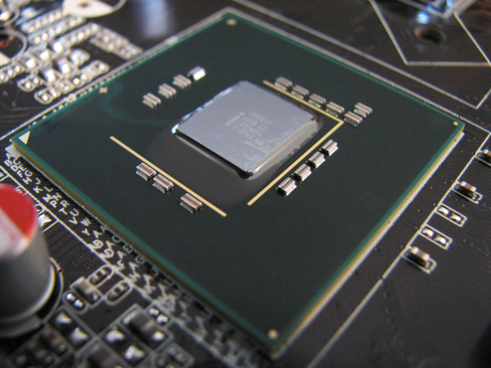
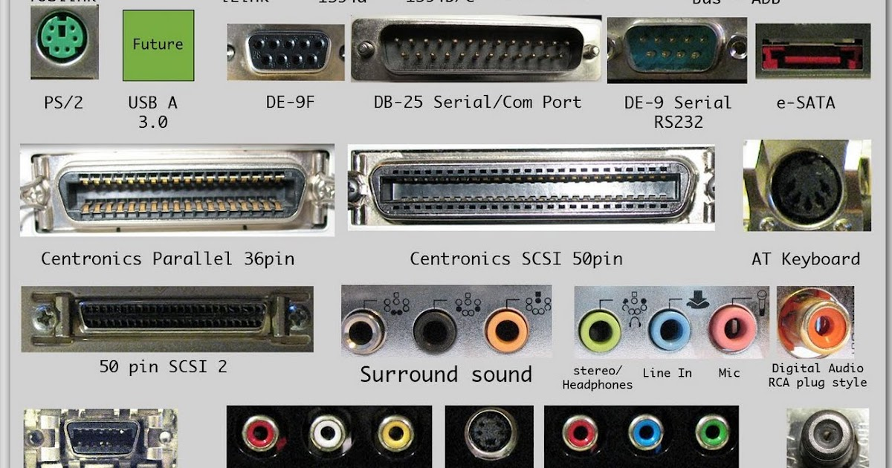
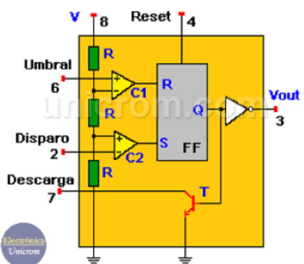
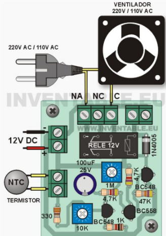
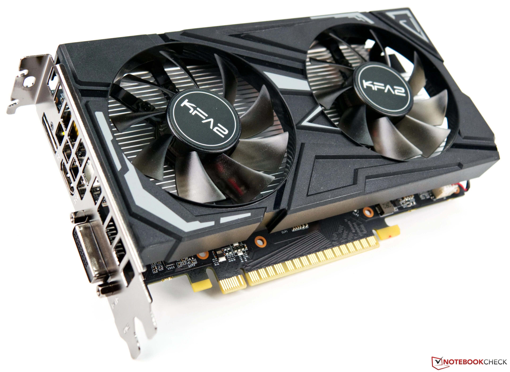
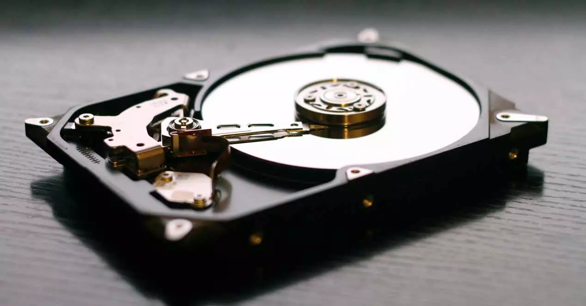
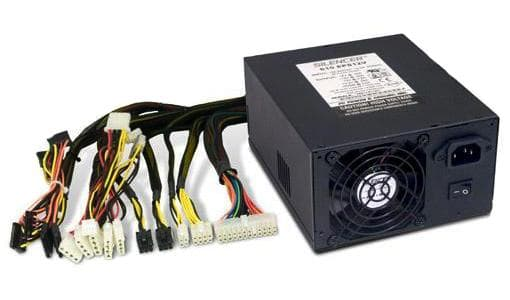

3.1 Chip set.
El chipset es un componente crucial en la arquitectura de una computadora, actuando como el intermediario
principal entre el procesador y otros componentes del sistema, como la memoria, los dispositivos de
almacenamiento y los periféricos. Originalmente, los chipsets estaban divididos en dos partes: el
Northbridge y el Southbridge. El Northbridge se encargaba de las tareas que requerían alta velocidad, como
la comunicación entre la CPU, la memoria RAM y la tarjeta gráfica. Por otro lado, el Southbridge gestionaba
las tareas de menor velocidad, como la comunicación con dispositivos de almacenamiento, puertos USB y otros
periféricos.
En las arquitecturas modernas, la funcionalidad del Northbridge ha sido en gran parte integrada dentro del
procesador mismo, mientras que lo que solía ser el Southbridge ha evolucionado y es conocido simplemente
como el chipset o Platform Controller Hub (PCH) en el caso de Intel. Esta integración ha permitido mejorar
el rendimiento y la eficiencia energética al reducir la latencia y el consumo de energía asociado con las
comunicaciones entre componentes. El chipset sigue siendo vital para proporcionar conectividad y soporte a
diversas interfaces y tecnologías, incluyendo PCIe, SATA, y USB, y juega un papel esencial en la estabilidad
y funcionalidad general del sistema.

3.1.1 Unidad de procesamiento.
La unidad de procesamiento, comúnmente referida como CPU (Unidad Central de Procesamiento), es el componente
principal de una computadora encargado de ejecutar instrucciones de programas mediante operaciones
aritméticas, lógicas, de control y de entrada/salida. La CPU interpreta y ejecuta las instrucciones
contenidas en el código del programa, realizando cálculos y tomando decisiones lógicas necesarias para
llevar a cabo las tareas requeridas. Está compuesta por varios subcomponentes esenciales, como la unidad
aritmético-lógica (ALU), que maneja las operaciones matemáticas y lógicas, y la unidad de control, que
dirige las operaciones de la CPU orquestando la ejecución de instrucciones y el flujo de datos entre los
diferentes componentes del sistema.

3.1.2 Controlador del Bus.
El controlador del bus es un componente esencial en la arquitectura de un sistema informático, encargado de
coordinar la comunicación entre diferentes dispositivos a través del bus del sistema. Este controlador
gestiona la transferencia de datos entre la CPU, la memoria, los dispositivos de almacenamiento y otros
periféricos, asegurando que los datos se transmitan de manera eficiente y sincronizada. Además de controlar
el flujo de datos, el controlador del bus también puede implementar protocolos de comunicación específicos y
gestionar la asignación de recursos para optimizar el rendimiento del sistema y garantizar la compatibilidad
entre los dispositivos conectados al bus.

3.1.3 Puertas de Entrada/Salida.
Un puerto de E/S es un enchufe en una computadora al que se conecta un cable. El puerto conecta la CPU a un
dispositivo periférico a través de una interfaz de hardware o a la red a través de una interfaz de red.
Estas puertas pueden
configurarse como entradas para leer señales eléctricas externas o como salidas para enviar señales
eléctricas a dispositivos externos. Son componentes esenciales para la interacción entre el sistema embebido
y su entorno, proporcionando flexibilidad y capacidad de control sobre una amplia variedad de dispositivos.
En otras palabras, un puerto de E/S es un punto de conexión que actúa como interfaz entre la computadora y
dispositivos externos como mouse, impresora, módem, etc. Estos son de dos tipos:
- Puerto interno: Conecta la placa base a dispositivos internos como unidad
de disco duro, unidad de CD, módem interno, etc.
- Puerto externo: Conecta la placa base a dispositivos externos como módem,
mouse, impresora, unidades flash, etc.

3.1.4 controlador de interrupciones.
El controlador de interrupciones es un componente vital en los sistemas informáticos que se encarga de
manejar y priorizar las interrupciones generadas por los dispositivos periféricos y otros eventos dentro del
sistema. Cuando se produce una interrupción, el controlador de interrupciones detiene temporalmente la
ejecución del programa principal para atender la solicitud del dispositivo periférico o evento. Además,
asigna prioridades a las interrupciones según su importancia y permite gestionar múltiples interrupciones
simultáneas para garantizar un funcionamiento coherente del sistema.
El controlador de interrupciones es responsable de determinar qué acción tomar en respuesta a una
interrupción, ya sea ejecutar una rutina de servicio de interrupción específica para atender la solicitud
del dispositivo periférico o ejecutar una rutina de manejo de error para tratar situaciones inesperadas.
Además, puede asignar niveles de prioridad a las interrupciones para garantizar que las interrupciones más
críticas se manejen primero. Los controladores de interrupciones modernos también pueden ofrecer
funcionalidades avanzadas, como enmascarado de interrupciones, gestión de vectores de interrupción y
capacidad de manejar interrupciones asincrónicas. Estas características hacen que el controlador de
interrupciones sea un componente esencial para garantizar la estabilidad y el rendimiento de los sistemas
informáticos.
3.1.5 controlador de acceso directo a
memoria.
El controlador de acceso a la memoria (Memory Controller) es un componente clave en la arquitectura de un
sistema informático que gestiona el flujo de datos entre la CPU y la memoria principal del sistema. Su
función principal es coordinar el acceso a la memoria, garantizando que las solicitudes de lectura y
escritura se realicen de manera eficiente y sincronizada. El controlador de acceso a la memoria interpreta
las solicitudes de acceso a la memoria generadas por la CPU y las dirige hacia la ubicación adecuada en la
memoria RAM, controlando el tiempo de acceso y la transferencia de datos entre la CPU y la memoria.
Además de administrar las operaciones de lectura y escritura, el controlador de acceso a la memoria puede
implementar técnicas de optimización de rendimiento, como la gestión de la memoria caché y la asignación
dinámica de recursos de memoria. También puede manejar protocolos de comunicación específicos, como DDR
(Double Data Rate) o GDDR (Graphics Double Data Rate), para mejorar la velocidad y la eficiencia del acceso
a la memoria. En conjunto, el controlador de acceso a la memoria desempeña un papel fundamental en el
rendimiento y la estabilidad del sistema, asegurando un flujo de datos rápido y confiable entre la CPU y la
memoria principal.
3.1.6 circuitos de temporizacion.
Los circuitos de temporización son componentes electrónicos que generan señales temporales o pulsos
eléctricos con una duración controlada. Estos circuitos son ampliamente utilizados en sistemas digitales
para sincronizar operaciones, controlar el tiempo de ejecución de instrucciones, y coordinar eventos en
dispositivos electrónicos. Pueden emplearse en una variedad de aplicaciones, desde la generación de relojes
en microcontroladores hasta el control de secuencias de operaciones en circuitos lógicos complejos. Los
circuitos de temporización pueden basarse en una variedad de tecnologías, como osciladores de cristal,
circuitos RC (resistencia-capacitancia), o contadores digitales, y su diseño puede variar según los
requisitos específicos de la aplicación, como la precisión temporal, la frecuencia de operación, y la
estabilidad del reloj.

3.1.7 Circuitos de control.
Los circuitos de control son fundamentales en la operación de sistemas digitales y computacionales, ya que
se encargan de gestionar y dirigir el flujo de datos y las señales dentro del sistema. Estos circuitos
interpretan las instrucciones desde la memoria y generan las señales necesarias para activar las operaciones
correspondientes en otras partes del sistema, como la unidad aritmético-lógica (ALU), los registros y los
buses de datos. En esencia, los circuitos de control coordinan todas las actividades internas de la CPU,
asegurando que cada componente opere en el momento correcto y de la manera correcta.
Existen diferentes tipos de circuitos de control, como los controladores cableados (hardwired control) y los
controladores basados en microprogramación (microprogrammed control). Los controladores cableados utilizan
un diseño fijo de lógica combinacional para generar señales de control, lo que permite una operación muy
rápida pero con menor flexibilidad. Por otro lado, los controladores microprogramados utilizan una memoria
de control que almacena un conjunto de microinstrucciones, proporcionando mayor flexibilidad y facilidad
para implementar cambios o actualizaciones en el conjunto de instrucciones. Ambos tipos de circuitos de
control son cruciales para el funcionamiento eficiente y preciso de los procesadores y sistemas digitales
modernos.

3.1.8 Controladores de video.
Los controladores de video, también conocidos como tarjetas gráficas o GPUs (Graphics Processing Units), son
componentes especializados en la gestión y procesamiento de datos gráficos para su representación en una
pantalla. Su función principal es liberar a la CPU de las tareas gráficas intensivas, permitiendo que los
gráficos y videos se rendericen de manera eficiente y rápida. Los controladores de video manejan la
ejecución de operaciones complejas como el mapeo de texturas, la transformación de coordenadas, y el cálculo
de efectos de iluminación y sombras, esenciales para aplicaciones que van desde juegos y multimedia hasta
diseño gráfico y visualización científica.
Estos controladores de video están equipados con su propia memoria (VRAM) para almacenar texturas, cuadros
intermedios y otros datos gráficos, y utilizan múltiples núcleos de procesamiento para manejar tareas en
paralelo, lo que mejora significativamente el rendimiento en comparación con el procesamiento gráfico
realizado por la CPU. Además, los controladores de video modernos soportan APIs gráficas avanzadas como
DirectX, OpenGL y Vulkan, que facilitan la programación de aplicaciones gráficas de alto rendimiento.
También pueden incluir capacidades adicionales como la aceleración de decodificación de video y el
procesamiento de inteligencia artificial, ampliando su utilidad más allá de los gráficos tradicionales.

3.2 Aplicaciones.
En informática, un periférico de
entrada/salida o E/S (en inglés:
input/output o I/O) es aquel tipo de
dispositivo periférico de un
computador capaz de interactuar con
los elementos externos a ese sistema
de forma bidireccional, es decir, que
permite tanto que sea ingresada
información desde un sistema externo,
como emitir información a partir de
ese sistema. Los Dispositivos
Periféricos de entrada son todos
aquellos dispositivos que permiten
introducir datos o información en una
computadora para que esta los
procese u ordene.
Funciones
- Un periférico de E/S es el que se utiliza para
ingresar (E) datos a la computadora, y luego de
ser procesados por la unidad central de
procesamiento (CPU), genera la salida (S) de
información. Su función es leer o grabar,
permanente o virtualmente, todo aquello que se
haga con la computadora, para que pueda ser
utilizado por los usuarios u otros sistemas.
Tipos
- Dispositivos o periféricos de comunicación entre
computadoras, tales como módems y tarjetas de
red, por lo general sirven para entrada y salida.
También, los dispositivos de almacenamiento de
datos, como los discos rígidos, la unidad de estado
sólido, las memorias flash, las disqueteras, entre
otros, se pueden considerar periféricos de
entrada/salida.
3.2.1 Entrada/Salida.
En informática, un periférico de
entrada/salida o E/S (en inglés:
input/output o I/O) es aquel tipo de
dispositivo periférico de un
computador capaz de interactuar con
los elementos externos a ese sistema
de forma bidireccional, es decir, que
permite tanto que sea ingresada
información desde un sistema externo,
como emitir información a partir de
ese sistema. Los Dispositivos
Periféricos de entrada son todos
aquellos dispositivos que permiten
introducir datos o información en una
computadora para que esta los
procese u ordene.
Dispositivos perifércios de entrada
Los periféricos de entrada son aquellos que
se utilizan para proporcionar datos y
señales a la unidad de procesamiento.
Algunos de ellos son, el teclado, mouse,
escáner, cámara web, micrófono y lector de
CD/DVD.
Dispositivos perifércios de salida
Son capaces de reproducir lo que ocurre en
la computadora para el interés del usuario.
La CPU genera patrones de bits internos, y
son estos dispositivos los encargados de
hacerlos comprensibles para el usuario.
Algunos de estos son, el monitor, impresora,
auriculares, tarjeta de sonido y tarjeta de
voz.

3.2.2 Almacenamiento.
El almacenamiento en sistemas informáticos se refiere a la tecnología y los componentes utilizados para
guardar y recuperar datos de manera persistente. Existen diversos tipos de almacenamiento, como los discos
duros (HDD), las unidades de estado sólido (SSD), y las unidades de almacenamiento óptico (CD, DVD). Los
discos duros utilizan platos magnéticos giratorios para leer y escribir datos, ofreciendo grandes
capacidades a un costo relativamente bajo, aunque con tiempos de acceso más lentos comparados con otros
medios. Las SSD, por otro lado, utilizan memoria flash para almacenar datos, proporcionando tiempos de
acceso mucho más rápidos y mayor durabilidad al no tener partes móviles, pero generalmente a un costo mayor
por gigabyte.
El almacenamiento no solo se limita al hardware físico, sino que también incluye sistemas de gestión y
organización de datos, como sistemas de archivos y bases de datos. Los sistemas de archivos, como NTFS,
FAT32 y ext4, organizan cómo los datos se almacenan y se recuperan en un dispositivo de almacenamiento,
gestionando aspectos como permisos y jerarquía de directorios. Las bases de datos, ya sean SQL como MySQL y
PostgreSQL, o NoSQL como MongoDB, permiten el almacenamiento estructurado de datos y ofrecen mecanismos para
realizar búsquedas y manipulaciones eficientes. La evolución constante de las tecnologías de almacenamiento
busca mejorar la capacidad, la velocidad de acceso y la fiabilidad, respondiendo a las crecientes demandas
de datos en aplicaciones modernas, desde el almacenamiento local hasta soluciones en la nube.

3.2.3 Fuentes de alimentación.
Las fuentes de alimentación son componentes esenciales en los sistemas informáticos, encargadas de convertir
la corriente alterna (AC) de la red eléctrica en corriente continua (DC) utilizable por los componentes
internos del ordenador, como la CPU, GPU, discos duros y otros periféricos. Además de la conversión de
voltaje, las fuentes de alimentación regulan y estabilizan la energía suministrada para proteger los
componentes contra variaciones y picos de voltaje que podrían dañarlos. Estas unidades vienen en diferentes
tamaños y capacidades, generalmente medidos en vatios (W), y pueden incluir características adicionales como
eficiencia energética, certificaciones 80 PLUS, y múltiples rieles de voltaje para distribuir la carga de
manera más segura y eficiente.

3.3 Ambientes de servicio.
El negocio de proveer servicios de datos es mucho más complejo que la forma en la que se dan los
tradicionales servicios, los primeros requieren de nuevos conocimientos y modelos de negocio, que con
frecuencia se termina involucrando o necesitando la colaboración de terceras empresas. Por lo que se hace
necesario que los operadores tradicionales transformen su negocio para ofrecer los servicios de datos con
los niveles de servicio que el mercado exige.
3.3.1 Negocios.
Definitivamente, la tecnología en general ha sido la causa principal y la acción más directa para la
transformación del trabajo de las organizaciones en la posguerra del siglo XX. Tanto los bienes de capital
"duros" (computadores, teléfonos, videos, facsímiles, grabadoras, etc.), como los programas y sistemas de
información y comunicación en general, han incrementado enormemente la productividad y eficiencia de las
organizaciones.
Tenemos como ejemplos los siguientes: bases de datos en redes de todo orden y topología, sistemas de
reservaciones en aerolíneas, sistemas de contabilidad y nóminas, archivos clínicos en centros de salud,
sistemas de conmutación electrónica y un sin número de otras aplicaciones a procesos administrativos.
3.3.2 Industria.
La industrialización de los servicios de tecnología de información va a redefinir el mercado en términos de
como las organizaciones evalúan, compran y seleccionan los servicios y como los vendedores desarrollan y
establecen precios de los servicios.
Para lograr esta estandarización, se requiere un enfoque hacia las soluciones genéricas y esto debe ser
responsabilidad de los proveedores, que deben de desarrollar, operar y administrar el resultado de estos
genéricos de TI.
Aunque los servicios de TI están en proceso de madurez, la madurez de la industria se ha incrementado en
aspectos evidentes, como la forma en que los servicios son implementados y administrados.
3.3.3 Comercio electrónico.
El desarrollo de estas tecnologías y de las telecomunicaciones ha hecho que los intercambios de datos
crezcan a niveles extraordinarios, simplificándose cada vez más y creando nuevas formas de comercio, y en
este marco se desarrolla el Comercio Electrónico.
Se considera “Comercio Electrónico” al conjunto de aquellas transacciones comerciales y financieras
realizadas a través del procesamiento y la transmisión de información, incluyendo texto, sonido e imagen.